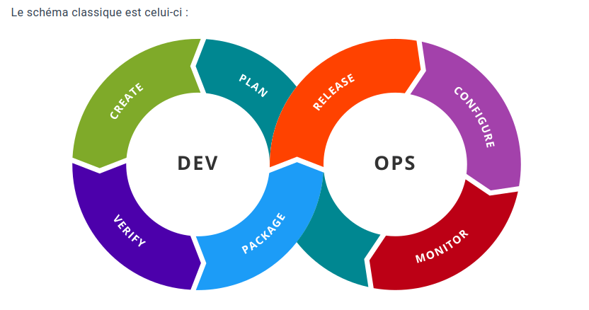

Introduction à la Stack DevOps
Qu'est-ce que le DevOps ?
Le DevOps est une philosophie et un ensemble de pratiques visant à améliorer la collaboration entre le développement logiciel (Dev) et les opérations informatiques (Ops). Ce terme a été inventé en 2007 par Patrick Debois, un ingénieur belge.
Objectifs principaux du DevOps
- Favoriser la collaboration :
- Supprimer les barrières entre les équipes de développement et d'exploitation.
- Améliorer la rapidité :
- Accélérer la livraison des logiciels grâce à l'automatisation et aux pipelines CI/CD.
- Augmenter la qualité :
- Intégration de tests automatisés et surveillance continue pour prévenir les erreurs en production.
- Améliorer la résilience :
- Monitoring proactif et feedback constant pour une amélioration continue.
Principes clés du DevOps
- Intégration continue (CI) :
- Les développeurs intègrent fréquemment leur code dans un dépôt partagé, avec tests automatiques pour détecter rapidement les problèmes.
- Livraison continue (CD) :
- Les modifications validées sont automatiquement déployées dans des environnements intermédiaires ou de production.
- Infrastructure as Code (IaC) :
- Gestion de l'infrastructure via des fichiers de configuration, permettant une réplication et une mise à l'échelle rapides.
- Surveillance et journalisation :
- Analyse continue des performances des applications et des infrastructures pour détecter et corriger les anomalies.
- Culture de la rétroaction :
- Encouragement à collecter les retours d’expérience pour améliorer les processus.
Outils DevOps
1. Planification et collaboration
- Objectif : Gestion des projets et suivi des tâches.
- Outils principaux :
- GitLab
- GitHub
- Jira
2. Gestion du code (Contrôle de version)
- Objectif : Versionner le code pour faciliter la collaboration et éviter les conflits.
- Outils principaux :
- GitHub
- GitLab
- Bitbucket
3. Intégration continue / Déploiement continu (CI/CD)
- Objectif : Automatiser le pipeline de développement (build, test, déploiement).
- Outils principaux :
- Jenkins
- GitLab CI/CD
- GitHub Actions
- CircleCI
- Travis CI
4. Gestion de l'infrastructure
- Objectif : Automatiser la configuration et l'orchestration des serveurs et clusters.
- Outils principaux :
- Docker : Conteneurisation des applications.
- Kubernetes : Orchestration des conteneurs.
- Terraform : Provisionnement d'infrastructure via IaC.
- Ansible : Gestion de configuration des serveurs.
5. Surveillance et retour d'information
- Objectif : Suivre les performances et détecter les problèmes en temps réel.
- Outils principaux :
- Prometheus : Monitoring des métriques.
- Grafana : Visualisation des données et création de tableaux de bord.
- ELK Stack (Elasticsearch, Logstash, Kibana) : Analyse et visualisation des logs.
- Autres : Datadog, Nagios, New Relic, Sentry.
Schéma classique du DevOps

Avantages du DevOps
- Livraisons plus rapides :
- Réduction du temps entre le développement et le déploiement.
- Qualité logicielle accrue :
- Tests automatisés et intégration continue.
- Meilleure collaboration :
- Suppression des silos entre équipes Dev et Ops.
- Résilience améliorée :
- Détection et correction rapide des anomalies grâce à un monitoring en temps réel.
- Réduction des coûts :
- Automatisation des tâches répétitives et gestion simplifiée des infrastructures.
Résumé
Le DevOps est une méthodologie moderne combinant outils, processus, et culture pour livrer des logiciels de manière rapide, fiable, et avec une meilleure qualité. En utilisant des outils comme GitLab, Docker, ou Kubernetes, et en adoptant des pratiques comme CI/CD, les entreprises peuvent améliorer la collaboration entre les équipes et répondre rapidement aux besoins du marché.